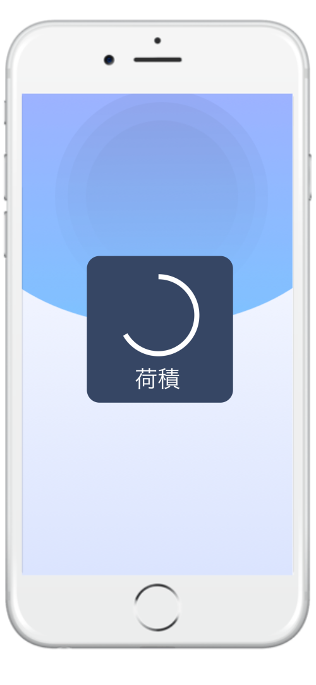
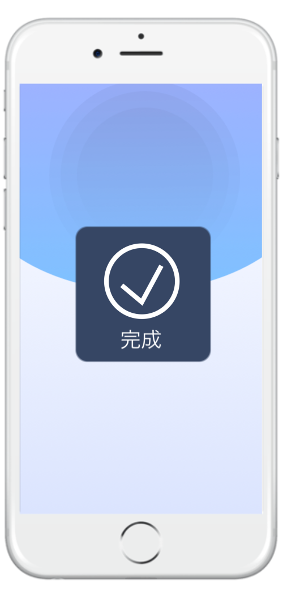

This team project is to create a Augmented Reality that can help both Patients and Coworkers to help
navigate the Hospital in a simple way. I was in a team that deals with other language barriers.
I will only be posting the work I have done.
Problem
Problem
The problem of the RRH (Rochester Regional Health) Hospital is that people do get lost. From
the research Mark Green, chief executive and co-founder of Connexient, 30%-40% of the
patients and visitors will get lost and waste their time in the hospital. This issue cause problems
for the hospital at: efficiency, experiences, and emotions for doctors, patients, and family
member and friends.
People can get lost very easy. Especially when it’s a fast pace emergency is going on. This can
cause traffic jam for the patients and doctors to show up in the right room on time.
Improve Localization
Some people do not understand English very well or do not understand it at all. We would like
Improve Emotion Experience
Hospital is a controlled enviornment. So things can be very stressful very easy. We would like to
improve a way to reduce stress and make people calmer.
Competitive Research
Magic Leap
Magic Leap is a company that solely design for Augmented and Virtual Reality. It shows step by step
of how the Augmented Reality functions.
Microsoft HoloLens
Microsoft HoloLens allows the user to contact other professionals to help the user how to fix things that
the user cannot fix.
Analytical Research
Google Translator
Google Translator automatically translate from one screen to another without having to type a single word
from one screen to another.
Though Google Translator is not 100% accurate. This will help the user who
does not speak English fluently to select their language and just hover over the numbers or words.
Blippar
Blippar is augmented reality company that deals with navigation from both indoor and outdoor. It tells the
accuracy of where you are suppose to go. It even has a list to know exactly where you are suppose to go.
User Flow
Name:
Muon Sháin
User:
Doctor
Gender:
Female
Age:
35
Muon does not speak fluent English. So there are language barriers between the patient and her co-workers.
In this situation, language translation doing the work may cause misunderstanding and waste of time and space. Relaying on
dictionary or other tools too often; making it wasting more time than it should.
Name:
Sán Raiz
User:
Patient
Gender:
Male
Age:
20
Sán comes in the hospital severely ill. He was called by his doctor to check what kind of illness San has.
However, the doctor does not know where he is going and ended up lost. The Patient
becomes annoyed. He tells the doctor to just find a room cause he could die at anytime.
But the doctor is convinced that he is going to the right direction but only to get even farther away from the
destination they are suppose to go.
Work Flow
This is a blueprint of how the app is gonna go.
Sketch
Sketch Exploration
These are my sketches. These are meant for exploration for ideas of how is my UI going to
be set up.
Wireframes
Version 1
Base
This page is made to be quick and efficient. Just type
in the number.
Type in the room number.
Room number display.
Find the cloest exit.
Delete a number.
Change Language.
Comfirm Page
This page is made to be quick and efficient. Just type in the number.
It’s ether yes or no.
If the user pressed yes, than the user will continue to the next page.
If the user pressed no, then the user will go back to the homepage.
Room number display.
Navigation Page
This tells the user which direction to go.
Tells the user which direction to go.
Arrows to tell the user to turn.
Tells the user to follow.
Map. Tells the user where to go.
Navigation Page - Almost There
Tells the user that they are almost theren.
Navigation Page - U-Turn
This page tells the user to turn around. When the user go in a wrong direction.
Navigation Page - Closer
Tells the user that they are very close
This is “Nav Beacon”. This tells the user the exact location of where the room is located.
Navigation Page - Here
Tells the user that they are here.
Version 2
Homepage - English
This new homepage allow the user to have users change their language and type in their room number
all in one room.
Homepage - Changing Language
Type in any language and they will find the language they are looking for. This method is easier to find the
langauge you need than it is using the scroll method to find your language.
Homepage - Other Location
For the rooms that are not numbered. The user can just use their finger to press and move it up and this
will appear.
Homepage - Revamp
This is version 2 part 3 of the onboard page.
This is similar to version 1 of the onboard. But this time, this is set up like a stack of
blocks. This keeps it organized and it is kept in the USA TODAY color pallettes of the topics they
have already selected.
Navigation
This is version 2 of the Navigation.
It's mostly the same thing. The only thing that has change is the map.
With the map at the bottom, the user can tell where they are without wondering why they are blindly
following the dots to the nav beacon.
Version 3 Navigation
Navigation - Not There Yet
This tells the user how far is it there to its destination.
This is the trails of direction.
This is the map. This tells the user the current
direction of their location.
Navigation - Other Location
The number of Miles have decreased as you go closer to the location.
This tells the user the room name and number.
Navigation - Almost There
In a distance, there is an arrow from afar. This tells the user the direction they need to go.
Navigation - Do Not Enter
This tells the user to not enter to that direction.
Navigation - Afar Navigation Beacon
From a distance, there is a navigation becon. It tells the user the exact location.
Navigation - Here
The text changes to something more encouraging to the user that they did it all by themself.
Main Composition
Homepage - Base
Did a refinement of the homepage. This design shoud make it simple, cool, and clean.
Though I was not the one who made the background, the microphone and the language button.
I did edit the homepage with the original design I had based on the first wireframe.
Homepage - Other Location
If the code is set up, the “Other Location” auto corrects into the exact room.
Homepage - Change Language
This is a list of languages that this user download on their phone.
Homepage - Change Language Complete
Once the language is selected, than all the witten part (excluding the logo)
of the app will become the language you selected.
Comfirm Page
This tells the user if this location is the right location the user wants to go.
Loading Page
This tells the user if this location is the right location the user wants to go.

Loading Page - Complete
This tells the user that the loading is complete.

Navigation
This is the navigation screen. Though it is a bit messy, this tells the user excat
location of where to go.
This is the red X. This tells the user not to enter to that direction.
This is the toggle language. This turns the from current language to English.
These are the arrows that leads to the exact location to the navigation becon.
This is the map. This will let the user know their exact location.
Navigation Continue
In this version, the user activated the toggle button for turning off language.
Navigation - Toggle Language Button
In this version, the user activated the toggle button for turning off language.
Navigation - Almost There
The navigation beacon is present. It will tell the user that this is the location they are going.
Navigation - Here
The app congratulate the user. It encourages the user that they did on their own.
Prototype
This is the homepage. The user is swipping the main article.